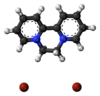

diquat

Definition: Diquat is the ISO common name for an organic dication that, as a salt with counterions such as bromide or chloride is used as a contact herbicide that produces desiccation and defoliation. Diquat is no longer approved for use in the European Union, although its registration in many other countries including the USA is still valid.
Source: Wikipedia
Wikipedia Page
Wikidata Page